Fabrication, integration and actual use.
Supporting views of the work and the scope of SZATech’s contribution. Select an image to view it at its original size.
Custom fixtures & precision assemblies
A closer view of the structure and machining details of custom fixtures and small precision assemblies.

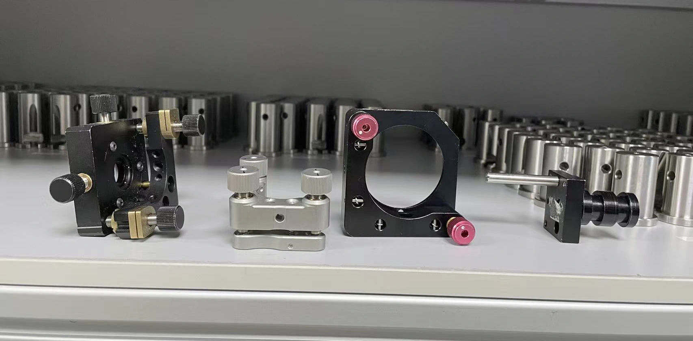
Aerospace Functional Test Unit
Custom aerospace blade test unit for simulating high-speed rotational conditions. The unit reached 15,000 rpm during testing.
- Application
- Aerospace blade testing
- Test result
- Reached 15,000 rpm during testing.
- SZATech contribution
- Mechanical integration and assembly of the custom test unit, with a functional test setup shown
- Result shown
- Assembled unit documented during functional testing

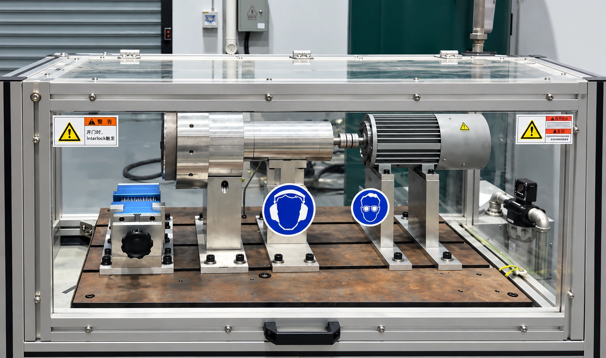

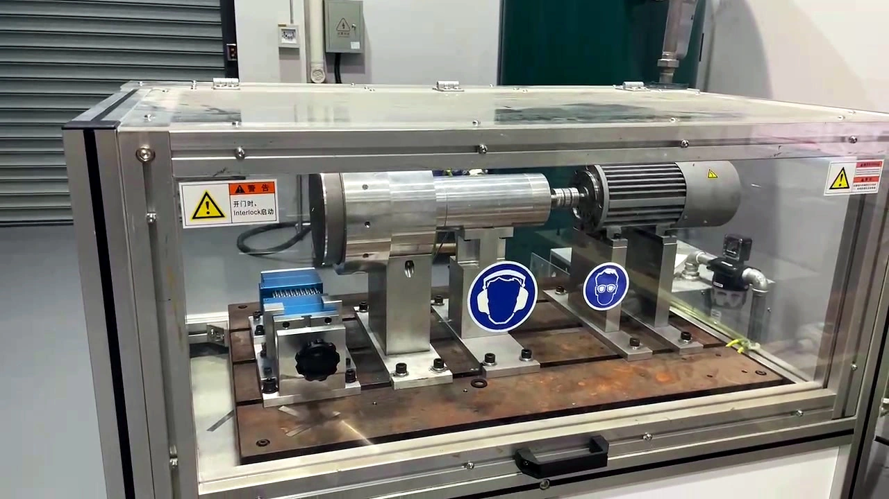
Large equipment assembly on site
The equipment components shown were custom made by SZATech and shipped by sea; this photo records their on-site assembly.

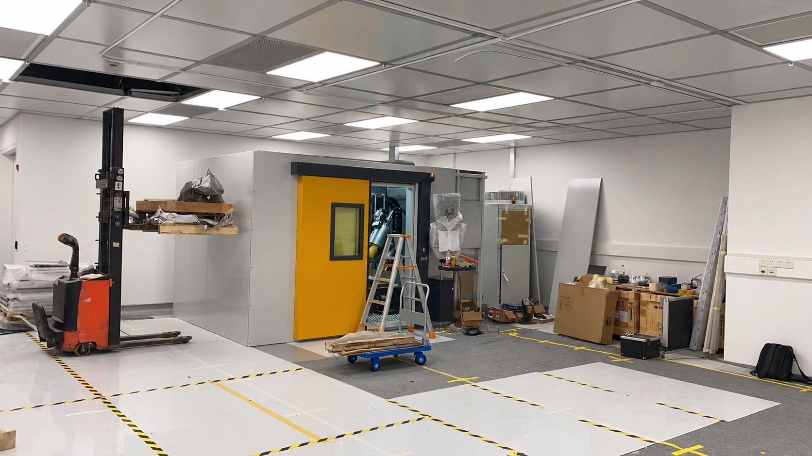
Machine enclosure
Custom framing, panels and mechanical details for the installed enclosure.

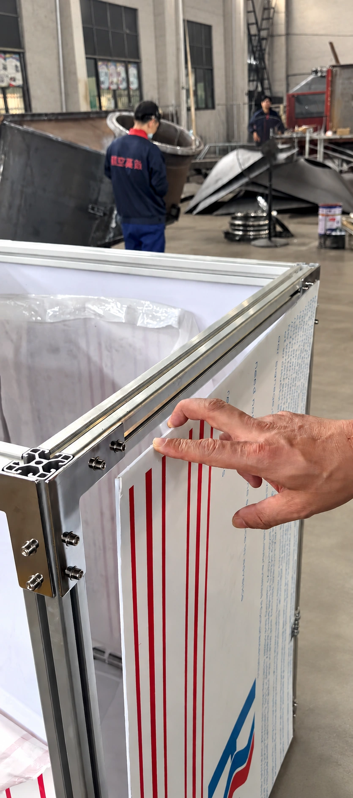

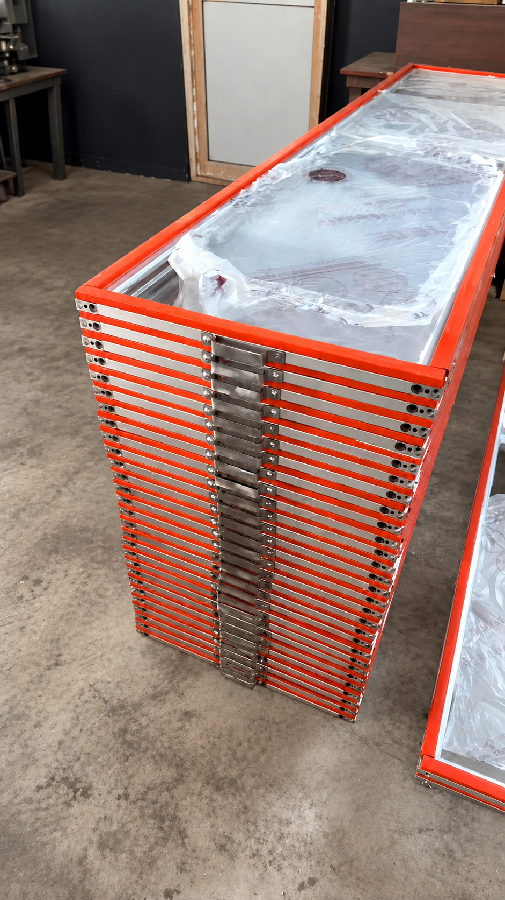

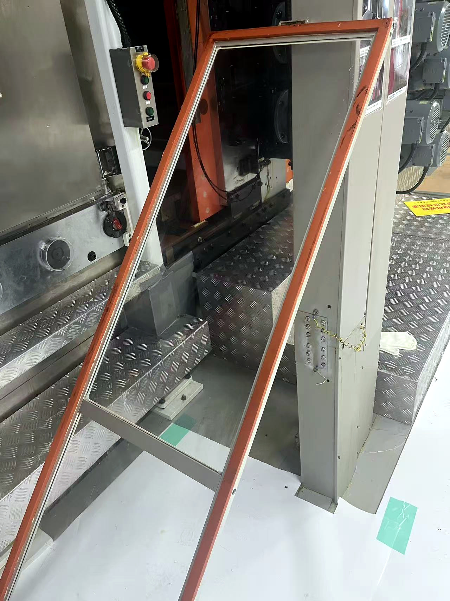
Custom Mouse Research & Surgical Platforms
Custom mouse research and surgical tables for neuroscience work. The homepage shows them in use; these photos show equipment details.

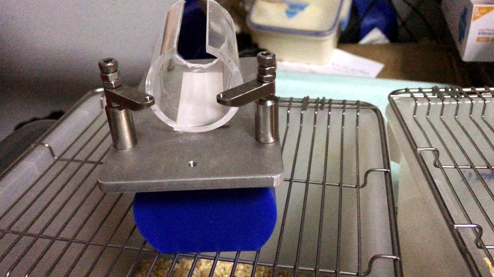

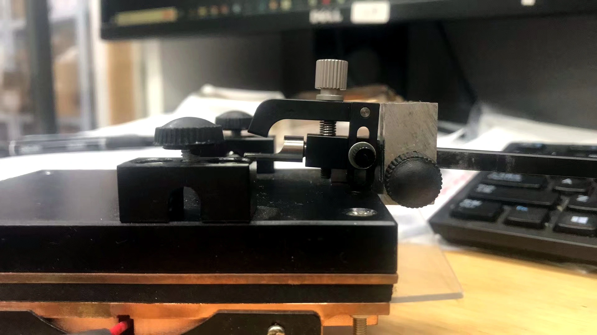
Ultrasonic process equipment
SZATech provides vessel fabrication, mechanical integration and system adaptation. Ultrasonic generators and core ultrasonic technology are supplied by specialist suppliers.

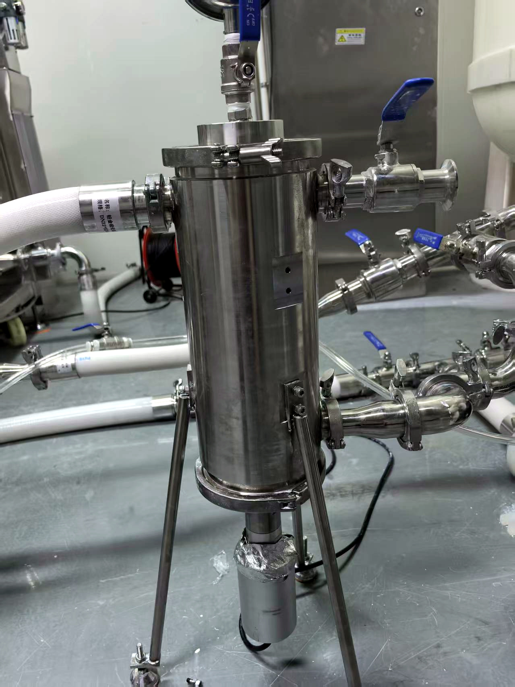
Robot application and testing
The robot itself was not manufactured by SZATech. Our contribution was custom fabricated structures, application integration and deployment testing support.

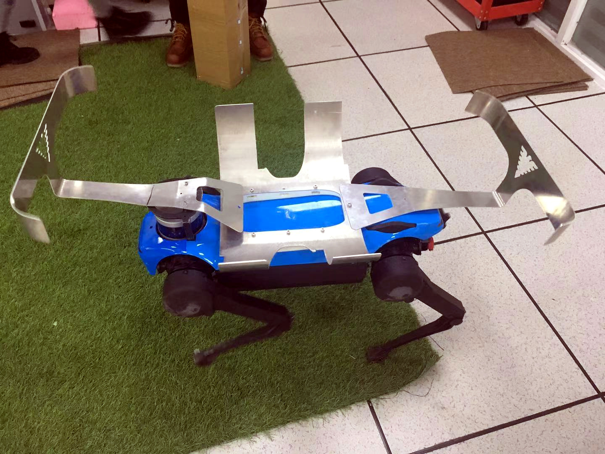

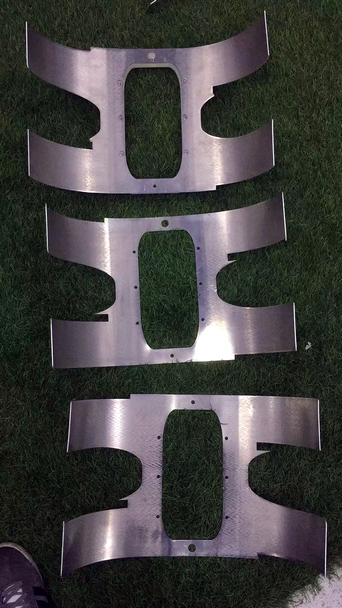
Large Fabrication
Related fabricated equipment view, supplementing the workshop image on the homepage.

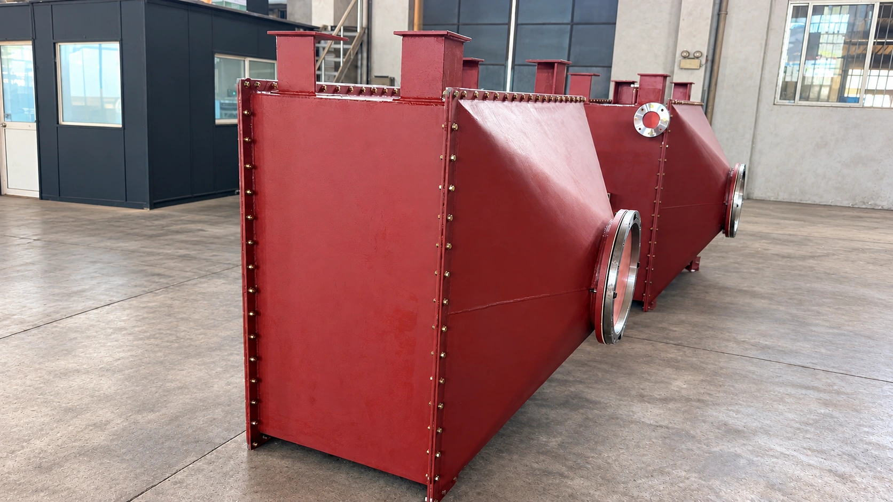
Manufacturing and inspection
Additional manufacturing and inspection views. Inspection scope and records are agreed to each project.

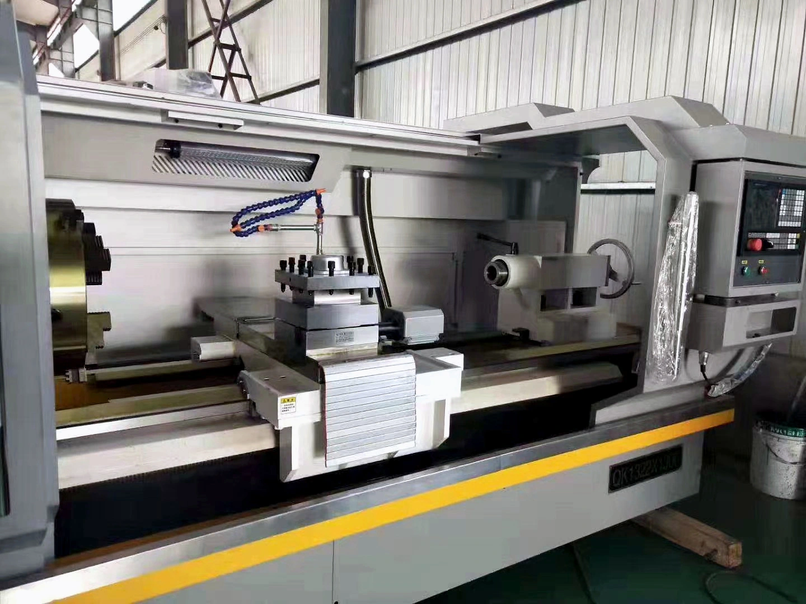

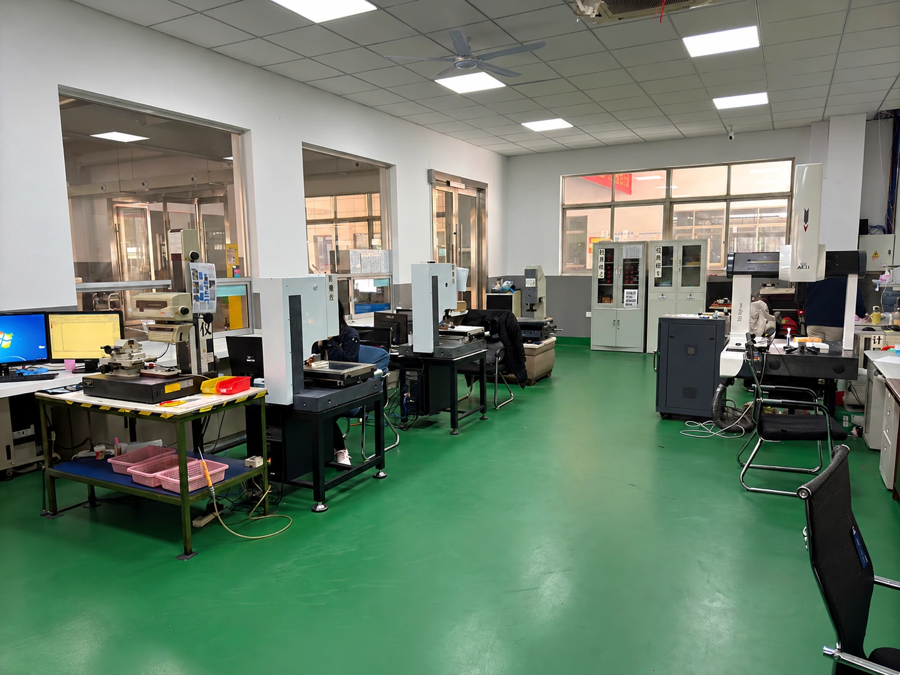
Repeat production
Additional production batch evidence.

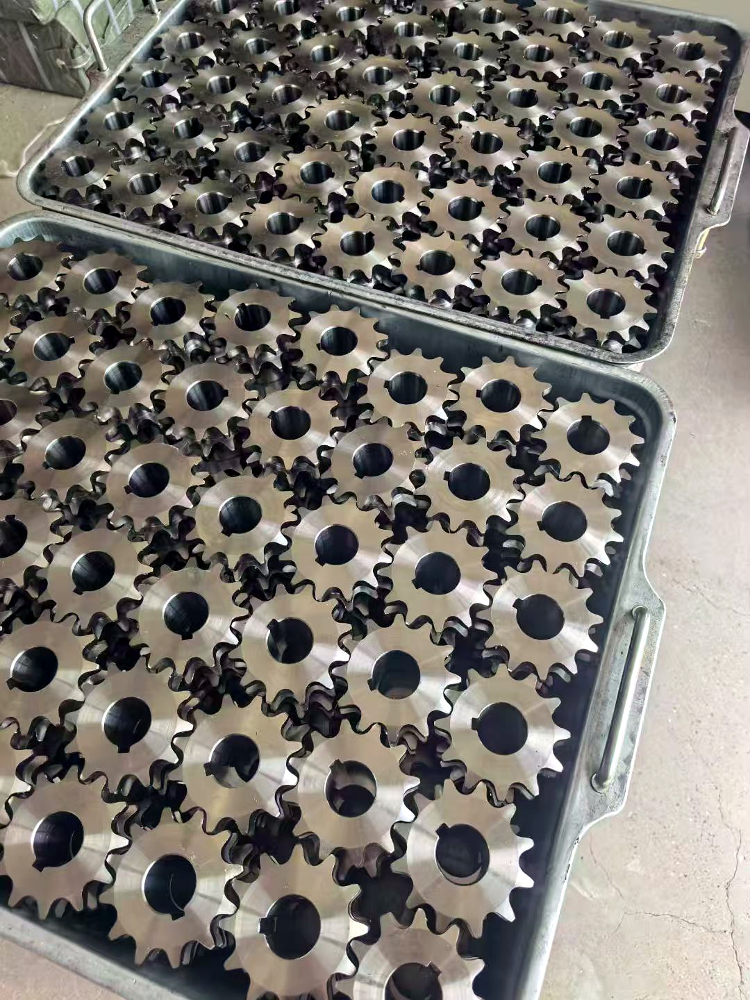